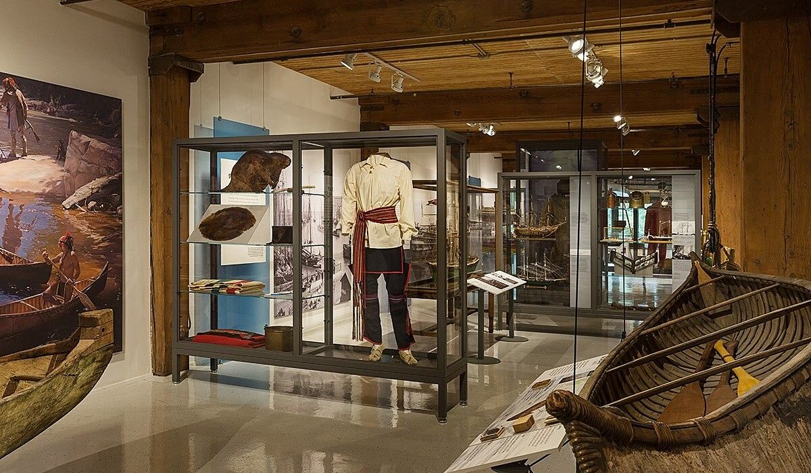

I am interested in game design because it combines creativity, storytelling, art, and technology. I enjoy thinking about how environments, characters, and choices can shape a player's experience.
Stories can make games more engaging by giving players a reason to explore and discover new things. I am interested in creating branching narratives where players' decisions can influence events and how a story unfolds.
For a collaborative educational game project created for the Chicago Maritime Museum, I developed a branching narrative based on historical research. The project helped me explore how storytelling and player choices can be combined in an interactive experience.

Through my studies at Illinois Institute of Technology, I am developing my understanding of programming, game mechanics, visual design, and interactive environments. I look forward to building more projects and improving my skills.
My goal is to create games that combine meaningful stories, interesting gameplay, and thoughtfully designed environments. I want to keep exploring how players interact with the worlds and experiences that designers create.